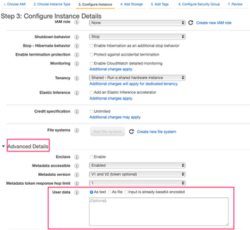

How to perform an unattended Spyderbat Nano Agent installation on AWS
- Attack Tracing and Intercept
- 3 days ago
- 3 min read
- 9 views
- 0 comments
Introduction
In this walkthrough, we’ll show how you can install the Spyderbat Nano Agent automatically when an AWS EC2 instance is created - this can be useful particularly for ephemeral instances, such as when leveraging AWS auto scaling groups for example. We’ll walk through creating an EC2 instance in the AWS console using the instance launch wizard, and leverage the ability to pass in user data at instance creation time - for more information about user data and cloud-init, see AWS docs here. For installing the Spyderbat Nano Agent in an attended fashion, see the walkthrough guide here.
Step by step guide
1) The 1st step is to retrieve the command to install the agent for your organization - click on the “New Source” button in the sources section of the product for your organization

2) Once you click on this button, you should be launched into the agent installation wizard where you will be presented with a link to install the agent, let’s copy the “wget” version of the install command and save that to the notepad.

AWS EC2 management console.
4) Go to Instances and use the Launch Instances wizard to request one or more instances.
5) Choose the desired AMI for the new instances and click Select.
6) Choose the desired instance type. Then click Configure Instance Details.
7) At the bottom of the “Configure Instance Details” screen, you will see an “Advanced Details” section with an input box for “User data”
8) In the user data field, we will enter a shell script to run the install command we copied to our notepad, similar to the below (for RedHat family distributions):